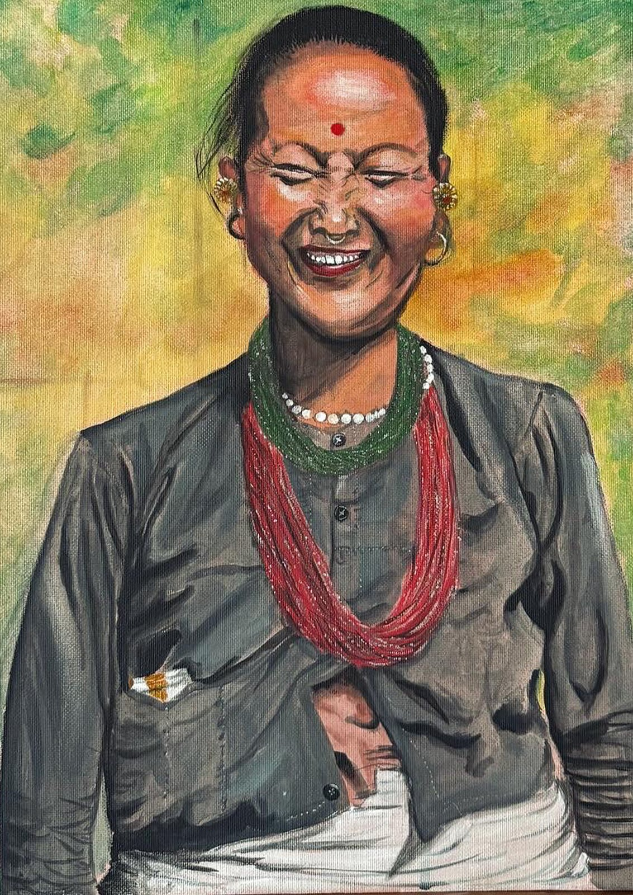

Kunstmarkt in der Garage Ost
Ein Nachmittag in Leipzig, mit den Originalen auf dem Tisch — die Bilder von dieser Website, ein paar Studien, die es nie online geschafft haben, und die Gelegenheit, persönlich über eine Auftragsarbeit zu sprechen.
Kommen Sie vorbei
Srijana hat einen eigenen Tisch mit Originalgemälden und kleineren Arbeiten auf Papier. Alles auf dem Tisch ist verkäuflich, ganz ohne Verpflichtung — es ist genauso ein guter Grund, den Pinselstrich aus der Nähe anzusehen, zu fragen, wie ein Bild entstanden ist, oder über ein Porträt aus der eigenen Familie zu sprechen.
Wenn Sie ein bestimmtes Bild aus der Galerie in echt sehen möchten, schreiben Sie vorher kurz — dann bringt sie es mit.
| Veranstaltung | Kunstmarkt — Srijanas Tisch: Originalgemälde, Studien und Drucke |
|---|---|
| Datum | Samstag, 12. September 2026 |
| Uhrzeit | 13:00 – 16:00 Uhr |
| Ort | Garage Ost |
| Adresse | Hermann-Liebmann-Straße 65–67, 04315 Leipzig |
| Eintritt | Frei |
| Bezahlung | Bar oder nach Absprache per Überweisung |
Der Termin ist noch zu bestätigen. Der Ort steht fest; Datum und Uhrzeit richten sich nach der Ankündigung des Veranstalters. Folgen Sie @srijana.art.gallery oder fragen Sie per E-Mail. Die Ankündigung steht auf rausgegangen.de.

Was voraussichtlich auf dem Tisch liegt
Originale · Studien · DruckeEine Mischung aus den Porträts und den kleineren Aquarellstudien — die Skizzenbuchblätter sind der einfachste Einstieg in eine Sammlung, und vor den großen Acrylporträts bleiben die Leute am längsten stehen.
Erst die Galerie ansehen